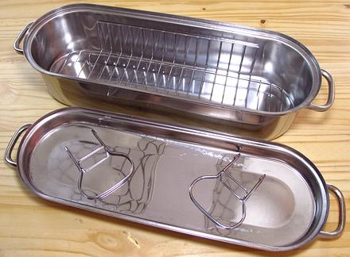

Fish Poacher / Steamer

This device is designed to poach whole fish. While the space under the rack
is not deep, it can still also be used to steam whole fish, as fish steams
quickly. It is under "Special Purpose" because very few people in North
America steam whole fish, so most households won't need this.
More on Kitchen Gear.
kp_fshpchz 220304 - www.clovegarden.com
©Andrew Grygus - agryg@clovegaden.com
Photos on this
page not otherwise credited are © cg1 -
Linking to and non-commercial use of this page permitted